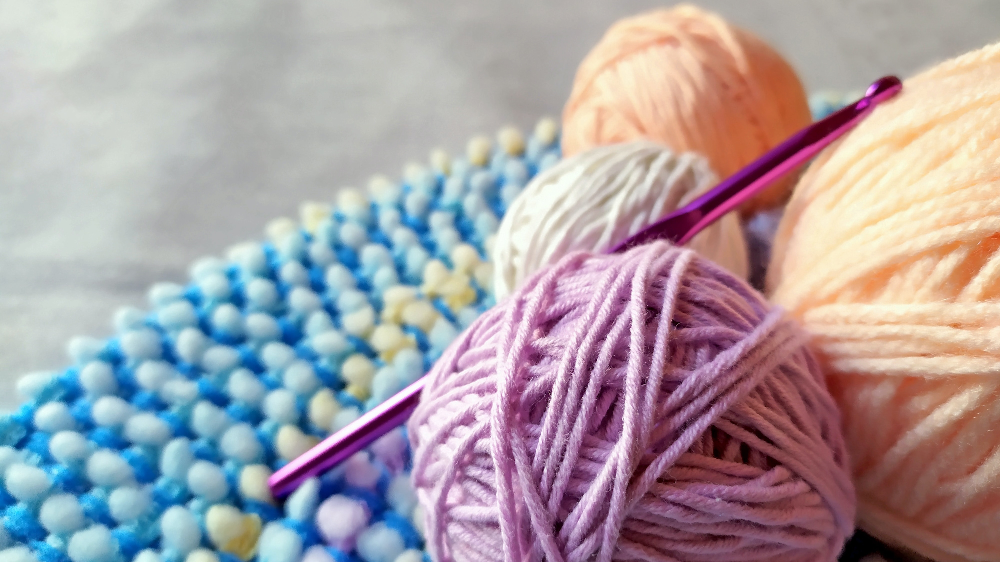

"LANAS NADIA"
Una empresa familiar
Ubicados en la vibrante esquina de Tribulato y Perón en San Miguel, somos tu destino de confianza para todo lo relacionado con hilos y lanas. En LANAS NADIA, creemos en la magia que reside en la creatividad y el tejido. Nuestra tienda no solo es un espacio lleno de lanas de calidad, sino un rincón acogedor donde los amantes de las manualidades y las artes textiles pueden encontrar inspiración y apoyo.
Nuestra tienda es el resultado de más de dos décadas de amor y dedicación a las artes textiles. Nuestro compromiso es ofrecerte las mejores lanas y hilos, junto con un servicio personalizado y asesoramiento experto. En LANAS NADIA, no solo somos vendedores, sino también tejedores apasionados. Te invitamos a explorar nuestra tienda y unirte a nuestra comunidad de amantes de las manualidades. ¡Esperamos verte pronto en nuestro rincón creativo en San Miguel!
